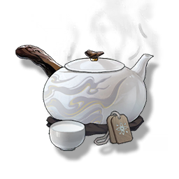

Mist Tea
Supplies

Increase the defense power and life limit of all Resonators in the team by 15% and 10% respectively, lasting 30 minutes. In multiplayer games, it only affects the player's own Character.
The guest tea served in the Misty House is also quite liked by Aalto himself.
The water in the pot turns into mist, and the mist in the cup turns into water, the tea fragrance accompanied by the mist is soothing and comforting.
"Alright, let's talk about our deal."
For Aalto, this also seems to be one of the business skills.